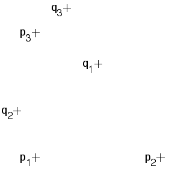

| Find the transformation taking p1 to q1, p2 to q2,
and p3 to q3. |
|  |
| The choice of axes and scale does not affect the transformation parameters, except for
multiplying e and f by the same factor. |
| So take p1 to be the origin, and p2 along the x-axis. In fact, the initial points can be
selected by the user, so p2 and p3 can be taken to be unit distances along the x- and y-axes.
This is only a simplification. The software will work for all (non-collinear) choices of initial points. |
| So take p1 = (0,0), p2 = (1,0), and p3 = (0,1). |
| Then we measure q1 = (0.5,0.75), q2 = (-0.15,0.375), and q3 = (0.25,1.18). |
| The system of equations becomes |
| e | = | 0.5 |
| a + e | = | -0.15 |
| b + e | = | 0.25 |
|
 |
| f | = | 0.75 |
| c + f | = | 0.375 |
| d + f | = | 1.18 |
| |
| Using the Affine Transformation Solver software, we find |
| r = -0.75 | s = 0.5 | theta = 30 | phi = 30 |
e = 0.5 | f = 0.75 |
|